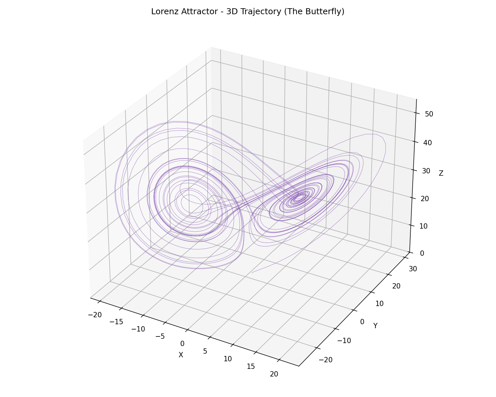
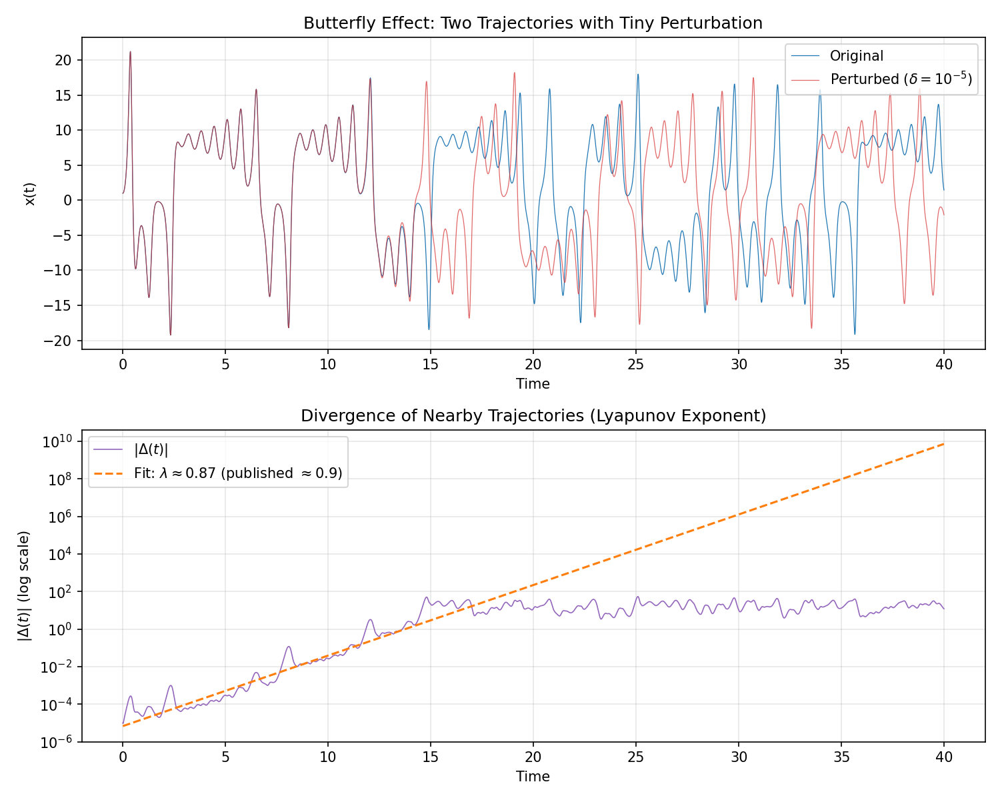
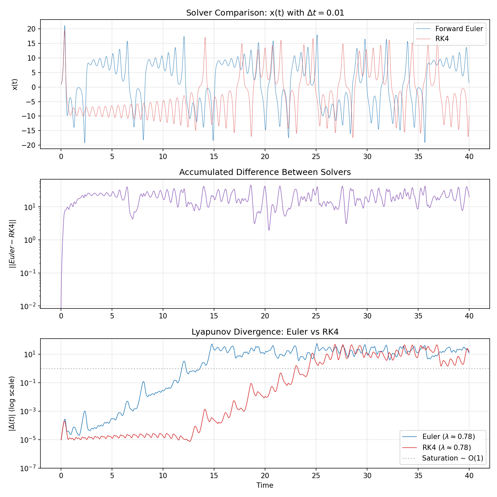
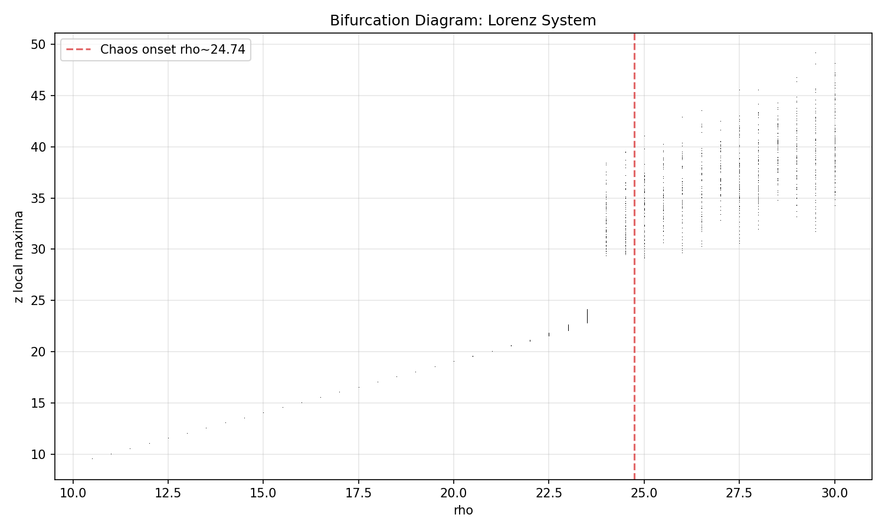
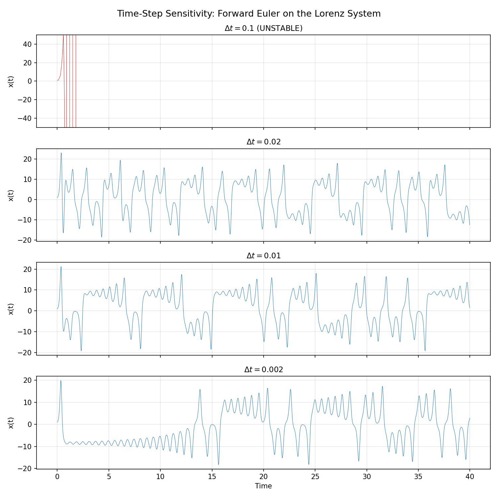

Key Metrics
| Quantity | Estimated | Published |
|---|
| Lyapunov exponent (λ) | ≈ 0.87 | ≈ 0.905 |
| Correlation dimension (D₂) | ≈ 1.88 | ≈ 2.06 |
| Chaos onset (ρ) | — | ≈ 24.74 |
Highlights
- Built Forward Euler and 4th-order Runge-Kutta ODE solvers from scratch
- Reproduced the Lorenz butterfly attractor and measured exponential divergence
- Demonstrated Forward Euler instability on chaotic systems at large time steps
- Mapped bifurcation from fixed point → periodic → chaotic regimes
- Estimated fractal dimension via the Grassberger-Procaccia algorithm
Results Gallery

3D trajectory — the iconic butterfly shape

Butterfly effect — λ ≈ 0.87 from trajectory separation

Euler vs RK4 — solvers diverge by t = 3 at Δt = 0.01

Bifurcation diagram — chaos onset at ρ ≈ 24.74

Time-step sensitivity — Euler blows up at Δt = 0.1
Quick Start
git clone https://github.com/abhictrl/lorenz-chaos-simulation.git
cd lorenz-chaos-simulation
pip install -r requirements.txt
python main.py
Tech Stack
Python · NumPy · Matplotlib · Pillow